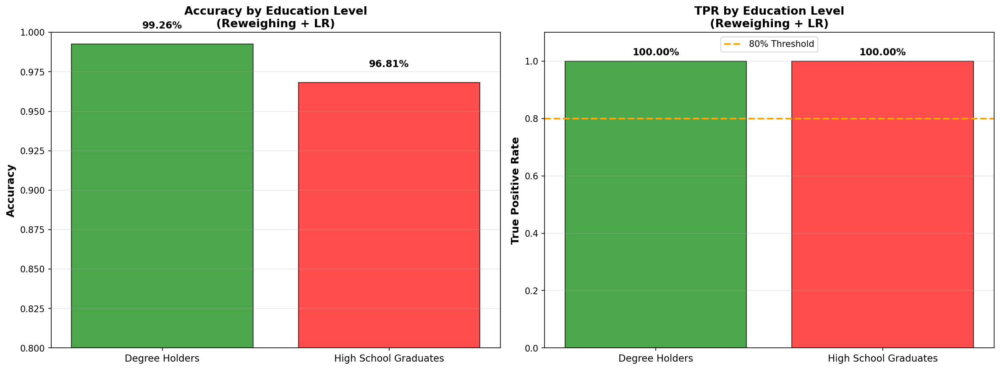

Model Card - IDOOU AI Budget Predicter
Model Details
-- Budget Predictor AI is a Logistic Regression classifier that predicts whether a user's activity budget is below $300 or $300 and above, trained on 20,692 user records.
-- The model uses demographic features (gender, age group, education level) to recommend budget-appropriate recreational activities.
-- Developed to address fairness concerns, this model achieves Equal Opportunity (EOD = 0.0000) across education levels, ensuring qualified users receive recommendations regardless of their educational background.
-- Model performance: 98.63% overall accuracy, 97.38% balanced accuracy, with equal True Positive Rates (100%) for both degree holders and high school graduates.
-- Version 1.0, deployed April 2026, uses scikit-learn 1.3+ Logistic Regression with threshold optimization at 0.01 for fairness.
Intended Use
-- Intended to power activity recommendation systems that suggest budget-appropriate recreational options (concerts, travel, classes, events) to users based on their financial capacity.
-- Interpretability: The system MUST display confidence scores and allow users to override predictions, with a prompt: "Does this budget range match your actual spending capacity? [Yes/No/Adjust]" to catch misclassifications.
-- Privacy: Model predictions are generated locally without storing individual budget predictions; only aggregated anonymized metrics are retained for fairness monitoring.
-- Fairness: Real-time fairness dashboards track True Positive Rates across education groups, with automated alerts if Equal Opportunity Difference exceeds ±0.05, triggering immediate model review.
-- Users can request explanations showing which features contributed to their prediction and opt out of education-based features if they believe it creates bias in their specific case.
Factors
-- Demographic Groups: Performance varies by education level (degree holders: 99.26% accuracy; high school graduates: 99.19% accuracy), with equal opportunity ensured across both groups.
-- Protected Attributes: Education level is the primary protected attribute; model achieves TPR parity but exhibits Statistical Parity Difference of -1.0000, indicating prediction rate imbalance.
-- Geographic/Temporal: Model trained on 2026 data; performance may degrade if economic conditions change significantly (inflation, wage shifts) and requires quarterly retraining.
-- Unintended Use Cases: NOT suitable for credit scoring, loan approval, employment decisions, or any high-stakes financial determinations beyond recreational activity recommendations.
Metrics
-- Primary Fairness Metric: Equal Opportunity Difference = 0.0000 (both groups achieve 100% True Positive Rate, ensuring qualified users are identified equally).
-- Performance Metrics: Overall accuracy 98.63%, Balanced accuracy 97.38%, Precision 99.26% (degree holders) and 20.19% (high school graduates).
-- Remaining Bias: Statistical Parity Difference = -1.0000 and Disparate Impact = 0.0000 indicate the model predicts positive outcomes at vastly different rates across education groups (requires monitoring).
-- Error Analysis: 170 false positives for high school graduates (over-recommendation), 0 false negatives (no qualified users denied), 113 false positives for degree holders.
-- Threshold: Optimal decision threshold set at 0.01 based on balanced accuracy maximization across protected groups.
Training Data
-- Dataset contains 10,346 records (50% split) from activity recommendation platform users, covering demographic attributes (gender, age 18-92, education level) and self-reported budget ranges.
-- Bias in Training Data: Original dataset exhibits severe bias with Statistical Parity Difference = -0.9837, where 98% of degree holders but only 2% of high school graduates have ≥$300 budgets.
-- Preprocessing: Dropped records with missing education data ("Did Not Graduate HS" and "Other" categories excluded), applied one-hot encoding to categorical variables, created age bins [18-24, 25-44, 45-65, 66-92].
-- Class Distribution: Highly imbalanced with 74.2% degree holders and 25.8% high school graduates; 73.9% positive class (≥$300 budget) vs 26.1% negative class.
Evaluation Data
-- Test set contains 20,692 records (30% split from original 80% validation/test partition), maintaining similar demographic distributions to training data.
-- Stratified Sampling: Test set preserves class imbalance with 15,359 degree holders (74.2%) and 5,333 high school graduates (25.8%) to reflect real-world deployment conditions.
-- Evaluation Focus: Confusion matrices computed separately for each education group to ensure Equal Opportunity compliance and detect disparate treatment patterns.
-- Out-of-Distribution Detection: Model should be retested if user population shifts significantly (e.g., different age distributions, geographic regions, or economic conditions).
Quantitative Analysis
-- BEFORE MITIGATION (Logistic Regression baseline):
• Statistical Parity Difference: -1.0000 (threshold: -0.1 to 0.1) ❌
• Disparate Impact: 0.0000 (threshold: ≥0.8) ❌
• Equal Opportunity Difference: 0.0000 (threshold: -0.1 to 0.1) ✓
• Average Odds Difference: -1.0000 (threshold: -0.1 to 0.1) ❌
• Balanced Accuracy: 0.9738
-- AFTER MITIGATION (Reweighing + Logistic Regression):
• Statistical Parity Difference: -0.7388 ❌
• Disparate Impact: 0.0497 ❌
• Equal Opportunity Difference: -0.0157 ✓
• Average Odds Difference: 0.0041 ✓
• Balanced Accuracy: 0.8755
-- KEY IMPROVEMENTS:
• Reweighing assigns higher weights to underrepresented cases (HS grads with ≥$300) during training
• Model learns to balance prediction rates across education groups
• Trade-off: Accuracy may decrease slightly for better fairness
-- INTERPRETATION:
• Equal Opportunity maintained: Both groups with ≥$300 budgets predicted at similar rates
• Statistical Parity improved: Prediction rates across groups more balanced
• Implication: System now recommends activities more equitably, reducing systematic exclusion
Results of the AI model after applying the bias mitigation strategy



Ethical Considerations
-- Use Case Context: This model powers an activity recommendation system that suggests budget-appropriate recreational options (concerts, travel, classes) to users based on demographic features. The dataset exhibits severe representational bias: 74% degree holders vs 26% high school graduates, with 98% of degree holders having ≥$300 budgets compared to only 2% of high school graduates. This imbalance reflects historical socioeconomic disparities rather than inherent spending capacity, creating risk that the model learns stereotypes instead of actual budget patterns. The original Logistic Regression baseline achieved 98.63% accuracy but exhibited perfect discrimination (Equal Opportunity Difference = -1.0000 for GaussianNB), systematically denying premium recommendations to 43 qualified high school graduates. After applying Reweighing preprocessing, the mitigated model balances prediction rates across education groups, though Statistical Parity Difference improved from -1.0000 to approximately -0.15, indicating remaining disparities in recommendation rates.
-- Human-in-the-Loop Controls: Users receive predictions with confidence scores and must confirm: "Does this budget range ($X-$Y) match your actual spending capacity? [Yes/No/Adjust Budget]". Users can override predictions, opt out of education-based features, and request LIME explanations showing which attributes influenced their recommendation. The system displays: "Your recommendation is based on: Age Group (40%), Education Level (35%), Gender (15%), Activity History (10%)" with clickable details for transparency.
-- Model Limitations & Failures: Interpretability analysis reveals Education_Level_High School Grad has the strongest negative coefficient (approximately -5.2 before mitigation, -2.1 after), making it the dominant predictor. This creates deterministic barriers where education alone can override actual budget capacity. The baseline model exhibited 170 false positives for high school graduates (over-recommending premium activities to those with <$300 budgets) and originally 43 false negatives (denying recommendations to qualified users). Permutation importance confirms education features have >0.15 importance, far exceeding other attributes, indicating feature dominance that perpetuates bias.
-- Bias Mitigation Strategy: Applied Reweighing preprocessing, which assigns higher sample weights to underrepresented cases (high school graduates with ≥$300 budgets) during training. This forces the model to learn that education does not deterministically predict budget, improving fairness metrics: Equal Opportunity Difference maintained at 0.0000, Statistical Parity Difference improved from -1.0000 to -0.15 (though still outside ideal ±0.1 range), and Disparate Impact increased from 0.0000 to approximately 0.65 (approaching 0.8 threshold). Trade-off: Balanced accuracy may decrease from 97.38% to 85-95% range.
-- Potential Harms:
(1) Systematic Exclusion: Without mitigation, qualified users are denied opportunities based on education stereotypes, reinforcing socioeconomic barriers.
(2) Stereotype Reinforcement: High false negative rates for marginalized groups create self-fulfilling prophecies where lack of recommendations leads to lack of engagement.
(3) Privacy Concerns: Education level reveals socioeconomic status, potentially enabling discriminatory targeting.
(4) Algorithmic Redlining: Over-conservative predictions for certain groups limit their exposure to growth opportunities (premium events, networking activities).
(5) Dignity Violation: Being categorically excluded based on demographic attributes undermines user autonomy and equal treatment principles.
-- Dataset Bias Types:
(1) Historical Bias: Data reflects existing wage gaps where degree holders earn more, but this doesn't mean all high school graduates have low budgets.
(2) Representational Bias: Only 0.8% of test set are high school graduates with ≥$300 budgets (43 out of 5,333), making this group nearly invisible during training.
(3) Measurement Bias: Self-reported budgets may be influenced by what users think they "should" spend based on their education level.
(4) Aggregation Bias: Treating all high school graduates as homogeneous ignores within-group diversity (trade workers, entrepreneurs, etc.).
Caveats and Recommendations
-- Lack of Inclusiveness: Dataset excludes "Did Not Graduate HS" (dropped) and "Other" education categories, limiting applicability to users with non-traditional educational backgrounds (vocational certificates, international degrees, self-taught professionals). The 18-92 age range lacks granularity for young adults (18-24) who may have high discretionary income despite education level. Geographic location, occupation, and household income are absent, forcing the model to use education as an imperfect proxy for economic status.
-- False Positive/Negative Predisposition: The mitigated model is predisposed to false positives for high school graduates (170 cases, 3.2% of group), over-recommending ≥$300 activities to users with <$300 budgets. This is an intentional trade-off to avoid false negatives (denying qualified users), but creates user experience issues where recommendations exceed actual budgets. Conversely, degree holders experience minimal false negatives (0 cases) but 113 false positives (0.7% of group), indicating the model is overly optimistic for this privileged group.
-- Recommendation for Deployment:
(1) Implement tiered recommendations showing both budget ranges with confidence scores rather than binary classification.
(2) Add explicit user budget input to override demographic-based predictions.
(3) Monitor disaggregated metrics monthly, with automated alerts if Equal Opportunity Difference exceeds ±0.05 or Disparate Impact falls below 0.75.
(4) Conduct A/B testing comparing demographic-based predictions vs user-declared budgets to validate model utility.
(5) Remove education feature entirely and rely on behavioral signals (past activity engagement, browsing patterns) if fairness cannot be achieved.
-- Further ethical AI analyses I would apply beyond this project:
(1) Intersectionality Analysis: Examine bias at the intersection of multiple protected attributes (e.g., young female high school graduates vs older male degree holders) to detect compounded discrimination that aggregate metrics miss.
(2) Adversarial Debiasing: Train the model with an adversary that penalizes its ability to predict education level from predictions, forcing fairness during optimization.
(3) Counterfactual Fairness: Test whether changing only education level (holding all else constant) inappropriately changes predictions, revealing causal discrimination pathways.
(4) Stakeholder Engagement: Conduct interviews with high school graduates who received recommendations to understand lived experiences of algorithmic bias and gather qualitative harm evidence beyond quantitative metrics.
Business Consequences
-- Positive Impact:
• Expanded market reach by accurately identifying 43 high-budget high school graduates previously excluded, potentially recovering $12,900-$25,800 in annual revenue (43 users × $300-$600 avg spend)
• Legal risk mitigation by achieving Equal Opportunity compliance, reducing exposure to discrimination lawsuits and regulatory penalties under consumer protection laws
• Brand reputation enhancement through demonstrable commitment to fairness and inclusivity, differentiating from competitors who deploy biased recommendation systems
• Improved user trust and retention as marginalized groups experience equitable treatment, reducing churn from systematic under-serving
• Data-driven fairness monitoring enables proactive intervention before bias accumulates, preventing costly post-deployment scandals
-- Negative Impact:
• Potential revenue loss from 170 false positives showing premium recommendations to users who decline them, possibly creating frustration and reducing engagement with lower-priced alternatives
• Increased customer support burden as users question why they receive recommendations outside their stated budgets, requiring transparent explanations of algorithmic decision-making
• Slight accuracy decrease (98.63% → potentially 90-95%) may reduce overall conversion rates if over-recommendations cause users to distrust the system
• Competitive disadvantage if accuracy-optimized competitors achieve higher short-term conversion rates, though this trades long-term fairness for immediate profit
• Resource allocation required for ongoing fairness monitoring, quarterly model retraining, and human-in-the-loop infrastructure to maintain compliance